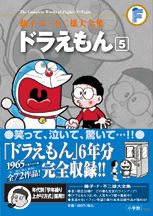

| |

定価：本体1,600円＋税
A5判／576ページ
好評発売中！
★は初めて単行本に収録される
作品です。
※収録内容は変更になる
場合があります。

|
★花さくはい（小一72年04月号）
★むしめがねでへんしん（小一72年05月号）
★うちでの小づちでせいくらべ（小一72年06月号）
★もぐら手ぶくろ（小一72年07月号）
ゆきぐも（小一72年08月号）
本物ライト（小一72年09月号）
落ちないつな（小一72年10月号）
ボールに乗って（小一72年11月号）
魚と遊ぼう（小一72年12月号）
動物ドロップ（小一73年01月号）
とうめいペンキ（小一73年02月号）
ウルトラリング（小一73年03月号）
ネジまいてハッスル！（小二73年04月号）
小人ロボット（小二73年05月号）
とりよせバッグ（小二73年06月号）
さいみんふりこ（小二73年07月号）
みがわりペンダント（小二73年08月号）
★びっくりばこ（小二73年09月号）
さいなんくんれん機（小二73年10月号）
★スーパーパワーゲン（小二73年11月号）
しずちゃんのはごろも（小二73年12月号）
★しんじゅせいぞうロボット（小二74年01月号）
★ヒラリくつ下（小二74年02月号）
人間磁石（小二74年03月号）
山びこ山（小三74年04月号）
こいのぼり（小三74年05月号）
こいこいマークでお中元（小三74年06月号）
うちのプールは太平洋（小三74年07月号）
ゾクゾク線香（小三74年08月号）
エースキャップ（小三74年09月号）
引っ越しひも（小三74年10月号）
カキどろぼう（小三74年11月号）
オトコンナを飲めば？（小三74年12月号）
テスト・ロボット（小三75年01月号）
グラフはうそつかない（小三75年02月号）
夜を売ります（小三75年03月号） |
ハリ千本ノマス（小四75年04月号）
ゆっくり反射ぞうきん（小四75年05月号）| ジ |  | ンと感動する話（小四75年06月号） |
デンデンハウスは気楽だな（小四75年07月号）
無人島の作り方（小四75年08月号）
ぼく、桃太郎のなんなのさ（小四75年09月号）
のび太放送協会（小四75年10月号）
おそだアメ（小四75年11月号）
見えなくなる目ぐすり（小四75年12月号）
もしもボックス（小四76年01月号）
百年後のフロク（小四76年02月号）
三月の雪（小四76年03月号）
からだの部品とりかえっこ（小五76年04月号）
おすそわけガム（小五76年05月号）
騒音公害をカンヅメにしちゃえ（小五76年06月号）
よかん虫（小五76年07月号）
トロリン（小五76年08月号）
あいあいパラソル（小五76年09月号）
呼びつけブザー（小五76年10月号）
マジックハンド（小五76年11月号）
オーバーオーバー（小五76年12月号）
お金のいらない世界（小五77年01月号）
七時に何かがおこる（小五77年02月号）
ころばし屋（小五77年03月号）
階級ワッペン（小六77年04月号）
ナイヘヤドア（小六77年05月号）
ミニカー教習所（小六77年06月号）
へやの中の大自然（小六77年07月号）
サハラ砂漠で勉強はできない（小六77年08月号）
パパもあまえんぼ（小六77年09月号）
オールシーズンバッジ（小六77年10月号）
架空通話アダプター（小六77年11月号）
ぼくを止めるのび太（小六77年12月号）
自家用衛星（小六78年01月号）
ドロン葉（小六78年02月号）
あの日あの時あのダルマ（小六78年03月号） |